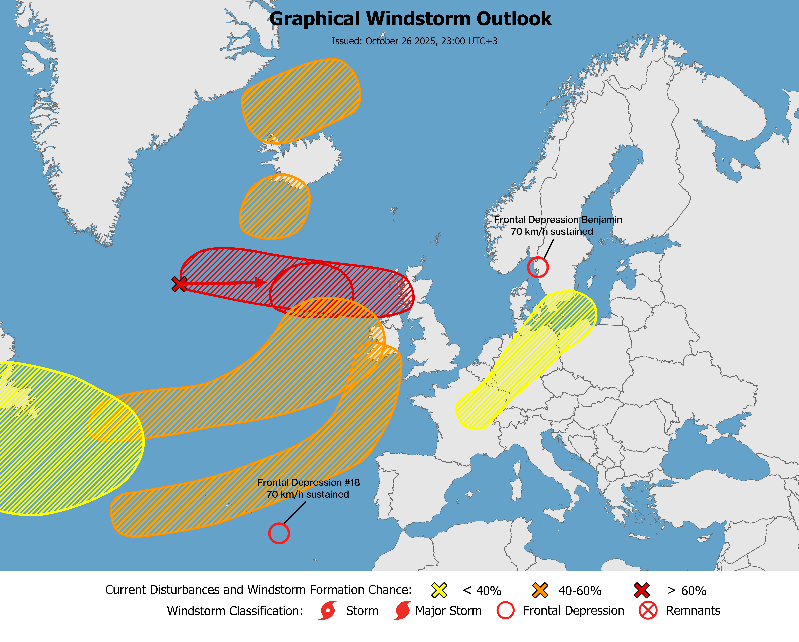

Outlooks
⚠️ These outlooks are not official.
Issued: [October 26 2025, 23:00 UTC+3]
Current conditions: [Multiple AOIs marked, a few Frontal Depressions may develop.]
Expected winds: [# - km/h sustained ; # - km/h sustained ; #Benjamin - 70 km/h sustained ; # - 0 km/h sustained]
Next update: [Not provided]
Formation chance within 48 hours: [AOI #1 - 70 percent / AOI #2 - 60 percent / AOI #3 - 0 percent / AOI #4 - 0 percent / AOI #5 - 20 percent / AOI #6 - 0 percent / AOI #7 - 0 percent / AOI #8 - 0 percent]
Formation chance within 7 days: [AOI #1 - 100 percent / AOI #2 - 80 percent / AOI #3 - 60 percent / AOI #4 - 60 percent / AOI #5 - 60 percent / AOI #6 - 60 percent / AOI #7 - 30 percent / AOI #8 - 20 percent]
Discussion
Frontal Depression Benjamin - Benjamin is currently weakening in Sweden, with sustained winds of 70 km/h.
Frontal Depression #18 - A low pressure system located southeast of the Azores is causing heavy rainfall and strong winds. It will soon start moving towards Portugal, and a track may be established soon.
AOI #1 - A low pressure area located southeast of Greenland is expected to become more organized and develop into a high-end Frontal Depression tomorrow.
AOI #2 - A separate Frontal Depression may develop on Tuesday, associated with AOI #1.
AOI #3 - A Frontal Depression is expected to develop on Wednesday evening in the North Atlantic Ocean. It will move towards Ireland, bringing heavy rainfall and strong winds. This storm is likely to reach Windstorm status.
AOI #4 - A Frontal Depression may develop over the North Atlantic Ocean on Friday, near Spain and Portugal, bringing heavy rainfall. It will strengthen as it moves towards the UK, but is expected to weaken before making landfall.
AOI #5 - A Frontal Depression may develop southwest of Iceland on Wednesday morning. The GFS shows this system to be the strongest, while the ECMWF indicates it is a bit weaker.
AOI #6 - A Frontal Depression may develop north of Iceland on Wednesday.
AOI #7 - A long and moderately strong rain mass is forecasted to extend from France to the Baltic Sea. There is a possibility that this rain mass will organize and develop into a Frontal Depression. The rain mass is associated with AOI #4.
AOI #8 - Recent model forecasts indicate that Melissa is approaching Canada on Halloween, where it has the potential to develop into a Frontal Depression, although this is currently deemed unlikely due to existing uncertainties.
Detailed / Regional View

⚠️ These outlooks are not official.
Issued: [October 26 2025, 23:00 UTC+3]
Current conditions: [None]
Expected winds: [0 km/h sustained, 0 km/h gusts]
Next update: [Not provided]
Formation chance within 48 hours: [AOI # - 0 percent / AOI # - - percent]
Formation chance within 7 days: [AOI # - 0 percent / AOI # - - percent]
Discussion
-